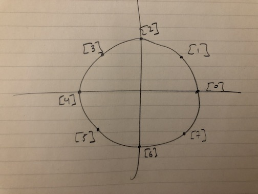
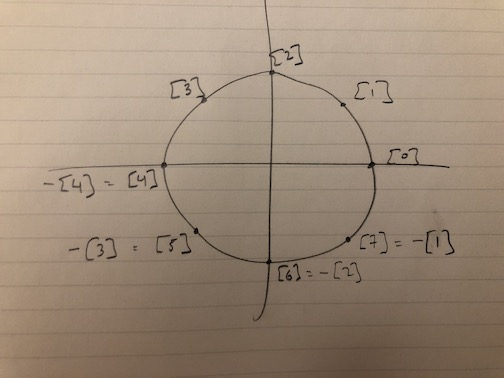

Suppose we want to work with positive and negative integers, but only have room to store 2N distinct numbers where N is a positive even integer, think 32 or 64? Suppose further that we want to do this on a computer? Let’s first figure out how to do this at all, then figure out how to do it on a computer.
The integers mod 2N
We want to work with integers—the whole numbers on the number line, positive, negative, and zero—meaning we want to have numbers and be able to add and multiply them, but we can only have 2N distinct numbers.
We can take “the integers mod 2N”, but let’s be precise about what that is. Informally, we take all of the integers, ask each one its remainder when we divide it by 2N, group together the integers with the same remainder onto a team, and define addition and multiplication on the set of resulting teams. This is the “how do you make teams in gym class” description.
More formally: we define an equivalence relation by saying that two integers are equivalent if their difference is a multiple of 2N (this is equivalent to “have the same remainder when divided by 2N”) and take the set of equivalence classes. Let’s write [2] for “the equivalence class of 2”, meaning, the set of all integers equivalent to 2, namely {…, − 2N + 2, 2, 2N + 2, …}. This means, of course, that [2] is the same as [2N + 2], is the same as [ − 2N + 2], etc. so there are infinitely many ways to represent each of these. We call 2 a representative of the equivalence class [2], each class has infinitely many representatives.
One way to think of this is: we mark off all the multiples of 2N on the number line, then roll up the whole number line so these points all align to get a circle of circumference 2N. We will only care about the integer points on the number line / circle, but there is no harm in picturing the points in between. So we have a circle. We can define addition, multiplication, and negatives on here, but we need to figure out how. Our intuition about how these work on the usual flat number line may fail us so we’ll need to build up new intution.
Remember that our numbers on the circle are our gym class teams, our equivalence classes, the sets [0], [1], …, [2N − 1].
First, addition: let’s define [a] + [b] to be [a + b]. So, for example, [1] + [2] = [1 + 2] = [3]. Does this make sense? We have to check that we get the same answer no matter which representative we choose. Try it, it works.
Next, multiplication: let’s define [a] * [b] to be [a * b]. So, for example, [2] * [3] = [2 * 3] = [6]. Same story, this has to be independent of which representatives we choose. It is.
There is plenty more: we have a zero for addition, [0], we have a one for multiplication, [1], we have inverses for addition, multiplication distributes over addition, and then there are a few weird things. Let’s make a list
- we have addition: [a] + [b] = [a + b]
- addition is associative and commutative
- we have a zero (additive identity): [0] + [a] = [a]
- we have additive inverses: [a] + [ − a] = [a + ( − a)] = [a − a] = [0]
- we have multiplication: [a] * [b] = [a * b]
- multiplication is associative and commutative
- we have a one (multiplicative identity): [1] * [a] = [1 * a] = [a]
- mulplication distributes over addition: [a] * ([b] + [c]) = [a] * [b + c] = [a * (b + c)] = [a * b + a * c] = [a * b] + [a * c]
and some weirdness
since [ − a] = [2N − a], we can add together two positive-looking numbers and get zero: e.g. [3] + [2N − 3] = [0]
we can multiply together nonzero numbers and get zero: e.g. [2] * [2N − 1] = [2 * 2N − 1] = [2N] = [0]
These just come with the territory: we are on a circle, addition and multiplication move us around the circle, and sometimes we end up back at the point [0].
The integers are denoted by ℤ in math and the number system we just defined is usually written ℤ/2Nℤ and called “Z mod 2 to the N” or “Z mod 2 to the N Z”. It has both addition and multiplication so it is a ring. We’ll define a few other rings and homomorphisms bewteen them, that is, functions which preserve their additive and multiplicative structure.
So that’s how to work with integers when we can only have 2N distinct numbers.
Example with N = 3
Let’s consider N = 3 so 2N = 8 and picture our circle sitting in the x-y plane like so.

Let’s do some computations
- [5] + [6] = [11] = [3]
- [5] + [8] = [13] = [5]
- [5] * [3] = [15] = [16 − 1] = [ − 1]
Adding additive inverses to our picture

we see that the negative of each element is its reflection over the x-axis. This means that the two numbers on the x-axis, [0] and [4] are their own additive inverses.
The ring UN
Now, let’s consider the set UN = {0, 1, …, 2N − 1}. We’ll make this into a ring in a way that is probably expected to some and unexpected to others.
We have one obvious function “iota”
ι : UN → ℤ
which is just inclusion of an integer between 0 and 2N − 1 into the set of all integers. We have another less-obvious function “tau”
τ : ℤ → UN
given by truncation which is defined as follows. Given an integer a, write its binary expansion and throw away the terms in the sum corresponding to powers of 2 that are greater than or equal to N. Explicitly, for
a = aN + K − 1 * 2N + K − 1 + ⋯ + aN * 2N + aN − 1 * 2N − 1 + ⋯ + a1 * 2 + a0
we have
τ(a) = aN − 1 * 2N − 1 + ⋯ + a1 * 2 + a0.
Our set UN consists exactly of the integers with at most N digits in their binary representations and our truncation function just truncates them to their N smallest digits.
Now, let’s define addition and multiplication in UN by
- a + b = τ(ι(a) + ι(b))
- a * b = τ(ι(a) * ι(b))
In words: we include our integers a and b, both of which are between 0 and 2N − 1, into the set of all integers, add or multiply up there, then truncate.
It is a little exercise to check that these are both associative by writing out the binary expansions of the integers that τ is eating. A helpful trick is to observe that if x and y are both integers, not necessarily between 0 and 2N − 1, then τ(ι(τ(x)) + y) = τ(x + y) since the extra terms in the binary expansion of x get discarded anyway.
Don’t let the ι throw you, it is just there to be extra explicit about when we mean an arbitrary integer and when we mean one in a specific range. It is almost the identity function.
These are also both commutative, 0 is the zero for addition, 1 is the one for multiplication. What about additive inverses? Well,
a + (2N − a) = τ(ι(a) + ι(2N − a)) = τ(2N) = 0.
So that is that: UN is a ring. Is τ a ring homomorphism? It is, again using the same observation about τ. Skipping some steps,
τ(a + b) = τ((aN + K − 1 + bN + K − 1) * 2N + K − 1 + ⋯ + a0 + b0)
by writing out the binary expansions of a and b, and
τ(a) + τ(b) = τ(ι(τ(a)) + ι(τ(b)))
which, writing out the expansions of τ(a) and τ(b), is
τ((aN − 1 + bN − 1) * 2N − 1 + ⋯ + a0 + b0)
and the extra terms in the first get discarded by τ.
An isomorphism ℤ/2Nℤ → UN
Let’s start with an observation: given an integer a, we can write out the binary expansion of a
a = aN + K − 1 * 2N + K − 1 + ⋯ + aN * 2N + ⋯ + a1 * 2 + a0
and then factor a 2N out of each of the first K terms of this sum
a = 2N * (aN + K * 2K − 1 + ⋯ + aN) + aN − 1 * 2N − 1 + ⋯ + a1 * 2 + a0
Recognizing the aN − 1 * 2N − 1 + ⋯ + a0 summand is τ(a) we can write
a = 2N * stuff + τ(a)
which says that [a] = [τ(a)]. Moreover, since τ(a) is between 0 and 2N − 1, this says that τ(a) is the unique representative of [a] between 0 and 2N − 1.
Now, let’s define a function f : ℤ/2Nℤ → UN by
f([a]) = τ(a).
Is this well-defined? What if we choose a different representative of [a]? Well, if we choose another representative b, so [b] = [a], then, as we just, saw [τ(b)] = [τ(a)]. Also, τ(b) is the unique representative of [τ(b)] between 0 and 2N − 1. But so is τ(a). So they are equal. More directly: if [b] = [a], then the difference between b and a is a multiple of 2N so we can write b = a + k * 2N for some integer k, and from the definition of τ, we can see that τ(a + k * 2N) = τ(a).
Is f a homomorphism? On the one hand,
f([a] + [b]) = f([a + b]) = τ(a + b)
on the other,
f([a]) + f([b]) = τ(a) + τ(b)
and the equality of these two things is the statement that τ is a homorphism for addition which we already waved our hands at. Similarly for multiplication. So yes, f is a ring homomorphism.
Finally: is f an isomorphsim? It has to be onto and 1-1. It is both. The “onto” is pretty straight forward: if a is in UN, then a = τ(ι(a)) which is equal to f([ι(a)]) so a is f of something thus f is onto. For the 1-1: if τ(a) = τ(b), then [τ(a)] = [τ(b)], but [τ(a)] = [a] and [τ(b)] = [b] so [a] = [b]. So yes, f is 1-1.
Thus, f is an isomorphism of rings. So arithmetic in UN is arithmetic in ℤ/2Nℤ, we just replaced the equivalence classes [0], [1], …, [2N − 1] with the numbers 0, 1, …, 2N − 1, their unique representatives between 0 and 2N − 1.
The ring TN
Now, let’s take another set, the set TN = { − 2N − 1, − 2N − 1 + 1, …, − 1, 0, 1, …, 2N − 1 − 1} This set also has 2N elements. Let’s not even waste time defining a new ring structure on here and instead just define a bijection with a ring we already have and transport the ring structure over via that bijection. Sounds like a mouthful, but it is pretty straight forward. Let’s define a function g : ℤ/2Nℤ → TN by saying that f([a]) is the unique representative of [a] between − 2N − 1 and 2N − 1 − 1. This is clearly a bijection. Write g − 1 for its inverse function g − 1 : TN → ℤ/2Nℤ. Now we can transport the ring structure on ℤ/2Nℤ to TN via g by defining, for a, b in TN,
a + b = g(g − 1(a) + g − 1(b))
and similarly for multiplication. That is,
a + b = g([a] + [b]) = g([a + b])
and
a * b = g([a] * [b]) = g([a * b])
So, just as in UN, arithmetic is arithmetic in ℤ/2Nℤ, we just replaced the classes
[0], [1], …, [2N − 1 − 1], [2N − 1], …, [2N − 1]
with the numbers
0, 1, …, 2N − 1 − 1, − 2N − 1, − 2N − 1 + 1, …, − 1.